library(tidyverse)9 Layers
The layered grammar of graphics.
9.1 Introduction
In this chapter: aesthetic mappings, geometric objects, facets, position adjustments and coordinate systems.
9.1.1 Prerequisites
As usual, load:
9.2 Aesthetic mappings
We’ll be using the mpg data:
mpg# A tibble: 234 × 11
manufacturer model displ year cyl trans drv cty hwy fl class
<chr> <chr> <dbl> <int> <int> <chr> <chr> <int> <int> <chr> <chr>
1 audi a4 1.8 1999 4 auto… f 18 29 p comp…
2 audi a4 1.8 1999 4 manu… f 21 29 p comp…
3 audi a4 2 2008 4 manu… f 20 31 p comp…
4 audi a4 2 2008 4 auto… f 21 30 p comp…
5 audi a4 2.8 1999 6 auto… f 16 26 p comp…
6 audi a4 2.8 1999 6 manu… f 18 26 p comp…
7 audi a4 3.1 2008 6 auto… f 18 27 p comp…
8 audi a4 quattro 1.8 1999 4 manu… 4 18 26 p comp…
9 audi a4 quattro 1.8 1999 4 auto… 4 16 25 p comp…
10 audi a4 quattro 2 2008 4 manu… 4 20 28 p comp…
# ℹ 224 more rowsAmong the variables in mpg are:
displ: a car’s engine size, in litres. A numerical variable.hwy: a car’s fuel efficiency on the highway, in miles per gallon (mpg). A numerical variable. A car with a low fuel efficiency consumes more fuel than a car with a high fuel efficiency when they travel the same distance.class: the type of car. A categorical variable.
To visualize the relationship between displ and hwy with geom_point(), the numerical variables are mapped to x and y, and the categorical variable is mapped to an aesthetic like colour and/or shape.
ggplot(mpg, aes(displ, hwy, colour = class)) +
geom_point()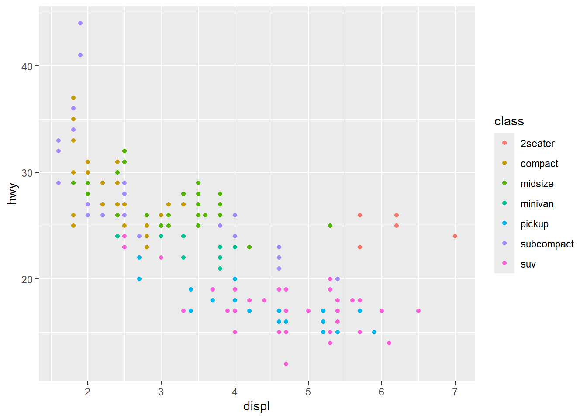
ggplot(mpg, aes(displ, hwy, shape = class)) +
geom_point()Warning: The shape palette can deal with a maximum of 6 discrete values because more
than 6 becomes difficult to discriminate
ℹ you have requested 7 values. Consider specifying shapes manually if you need
that many of them.Warning: Removed 62 rows containing missing values or values outside the scale range
(`geom_point()`).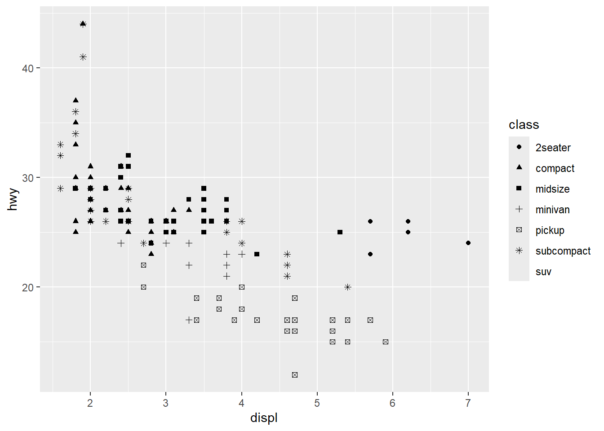
The second plot produces a warning message: ggplot2 will only use six shapes at a time by default, so additional groups go unplotted when you use the shape aesthetic. The second warning is related: there are 62 SUVs in the dataset and they’re not plotted.
You can also map class to the size or alpha aesthetics, which control the size and the transparency of the points, respectively.
ggplot(mpg, aes(displ, hwy, size = class)) +
geom_point()Warning: Using size for a discrete variable is not advised.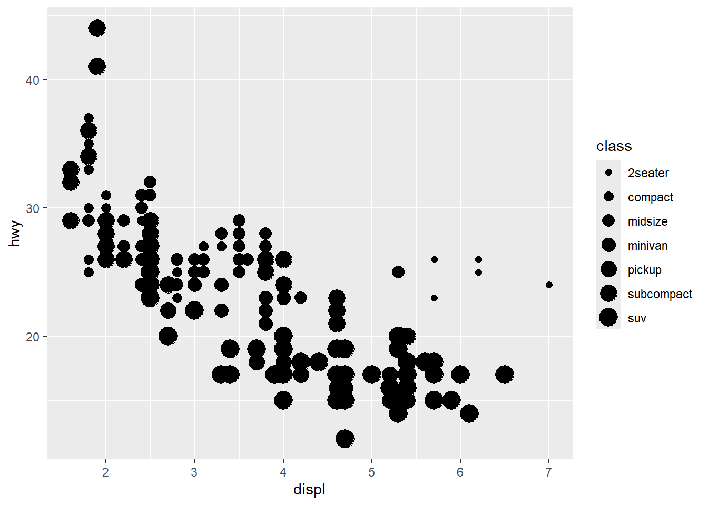
This brings a warning message advising you not to use size for a discrete variable.
ggplot(mpg, aes(displ, hwy, alpha = class)) +
geom_point()Warning: Using alpha for a discrete variable is not advised.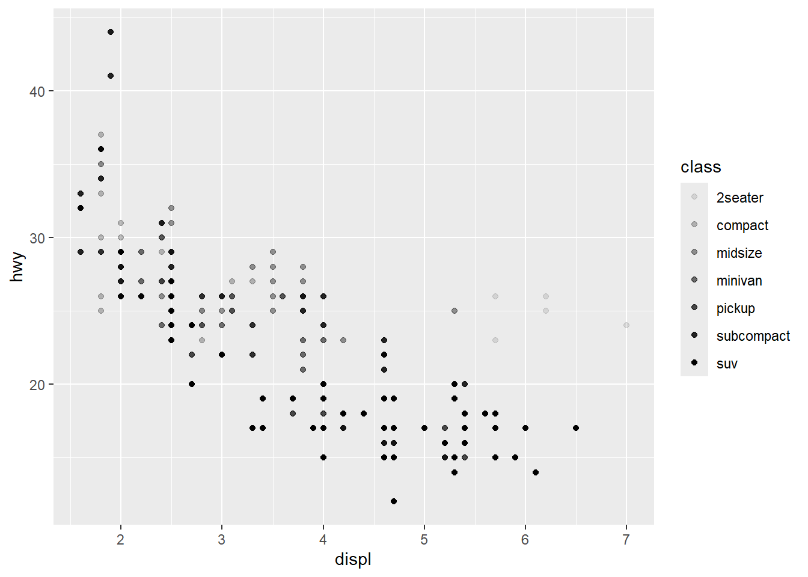
This also brings a warning message advising you not to use alpha for a discrete variable.
Mapping an unordered discrete (categorical) variable (class) to an ordered aesthetic (size or alpha) is generally not a good idea, because it implies a ranking that does not in fact exist. Some aesthetics like size and alpha naturally communicate an order or magnitude.
unique(mpg$class)[1] "compact" "midsize" "suv" "2seater" "minivan"
[6] "pickup" "subcompact"The visual properties of a geom can also be set manually as an argument of the geom function, outside of aes(). For instance:
ggplot(mpg, aes(displ, hwy)) +
geom_point(colour = "steelblue") +
theme_minimal()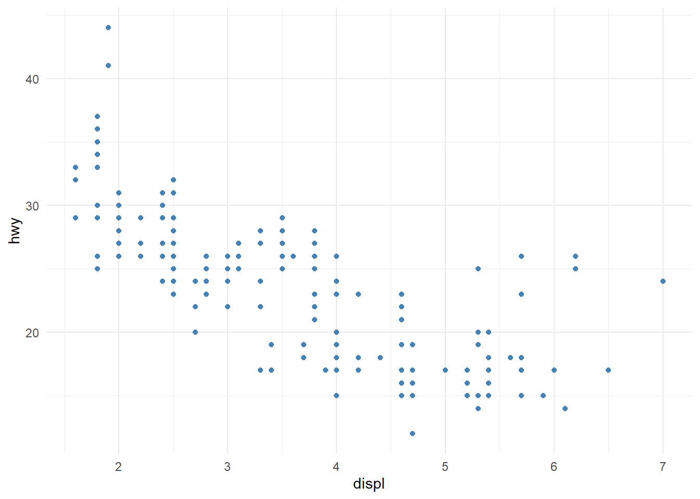
The colour set in the geom function only changes how the plot looks; it doesn’t convey any information.
9.2.1 Exercises
1. Create a scatterplot of hwy vs. displ where the points are pink filled-in triangles.
ggplot(mpg, aes(displ, hwy)) +
geom_point(fill = "pink", shape = 24)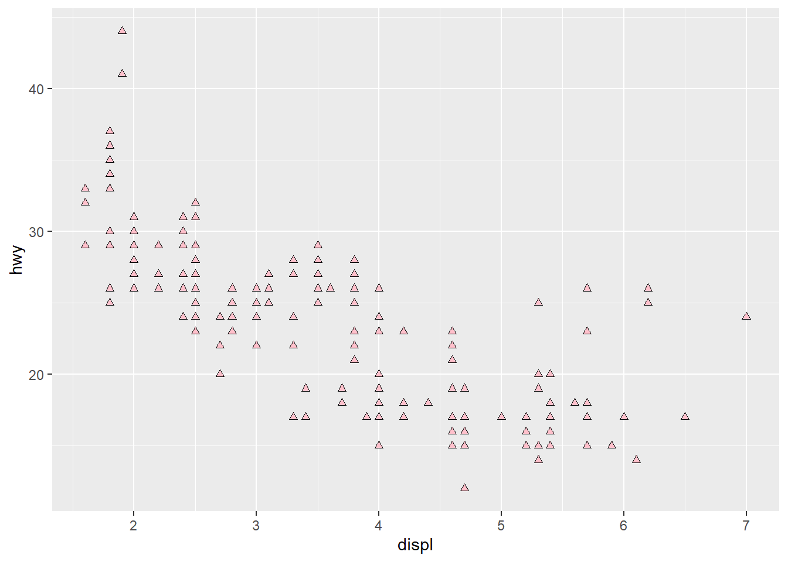
Shape 24 is a filled triangle. (Shapes 21 to 25 are the ones that can be filled with fill.)
2. Why did the following code not result in a plot with blue points?
ggplot(mpg) +
geom_point(aes(x = displ, y = hwy, color = "blue"))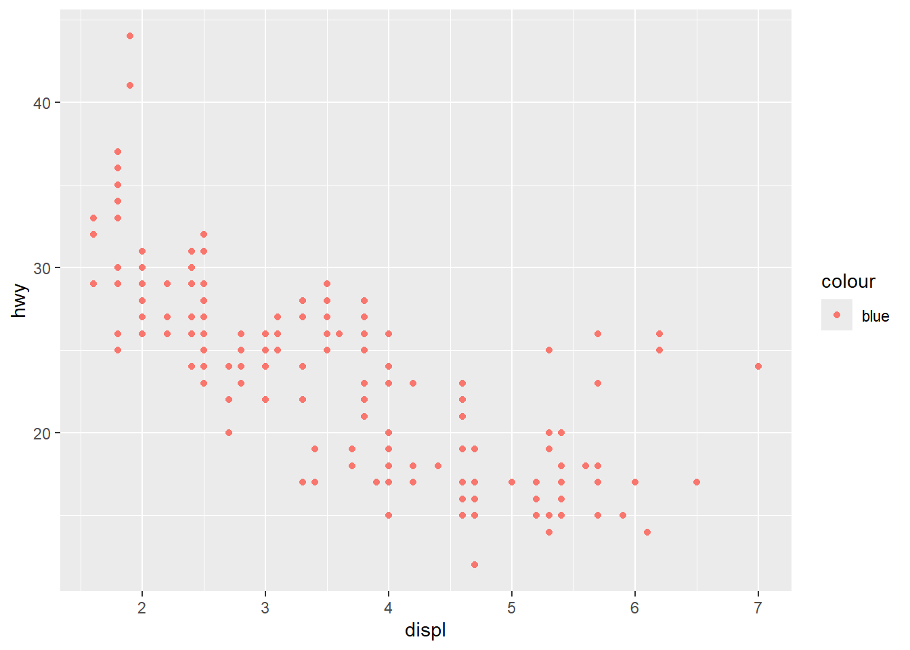
ggplot2 interprets "blue" as a value to map to the colour aesthetic, rather than as a direct instruction to colour the points blue. You can fix it by moving colour outside aes():
ggplot(mpg) +
geom_point(aes(displ, hwy), colour = "blue")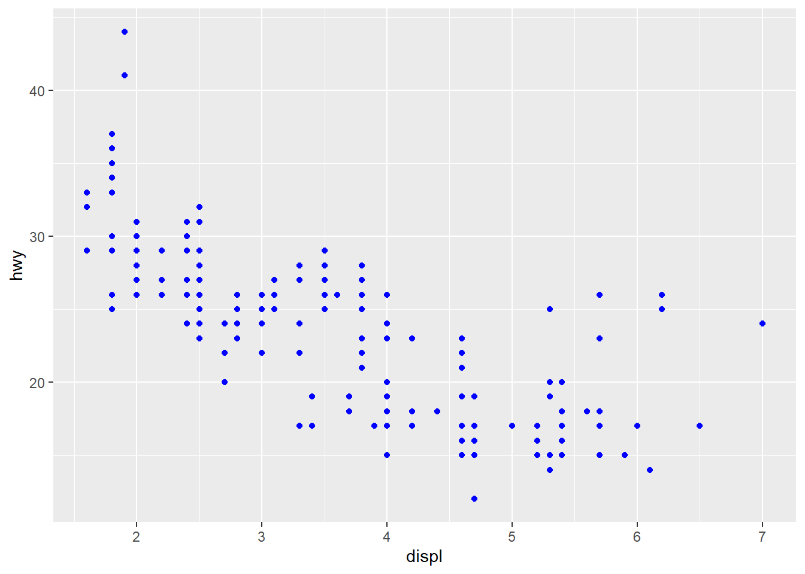
3. What does the stroke aesthetic do? What shapes does it work with? (Hint: use ?geom_point.)
ggplot(mpg, aes(displ, hwy)) +
geom_point(
size = 2,
stroke = 3,
shape = 25,
fill = "red",
colour = "black"
) +
theme_minimal()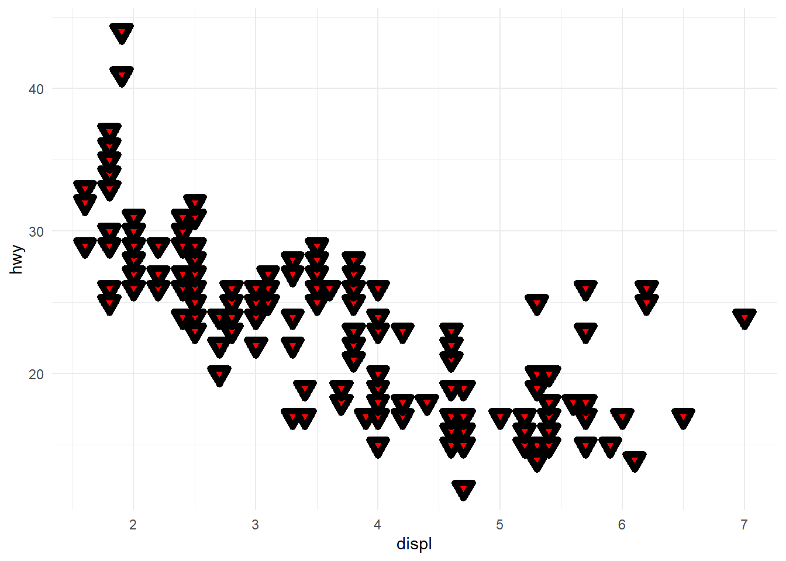
In geom_point(), stroke controls the thickness of the border (outline) around a point. It doesn’t make the entire point heavier or larger; it specifically changes the thickness of the outline. It only applies to shapes 21 to 25.
4. What happens if you map an aesthetic to something other than a variable name, like aes(color = displ < 5)? Note, you’ll also need to specify x and y.
ggplot(mpg, aes(x = displ, y = hwy, colour = displ < 5)) +
geom_point()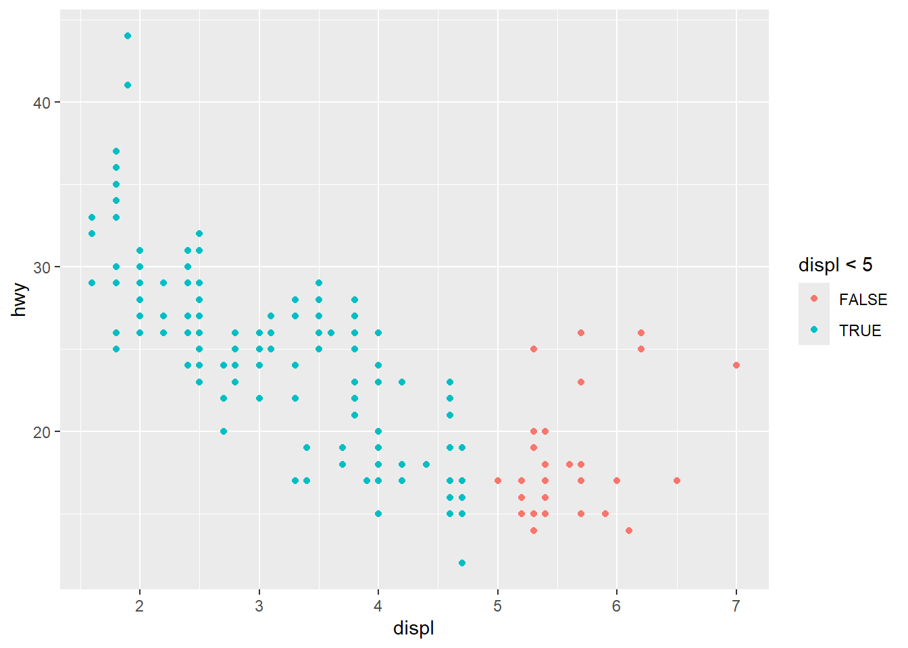
aes() doesn’t only accept existing variable names. It can also accept expressions that R evaluates using the data.
displ < 5 is a TRUE/FALSE test that you’ve put straight inside aes(). For every car, R asks “is the engine displacement less than 5 litres?” and gets TRUE or FALSE. Since colour is mapped to that result, ggplot colours the points by the answer.
9.3 Geometric objects
How are the following different or similar?
ggplot(mpg, aes(displ, hwy)) +
geom_smooth()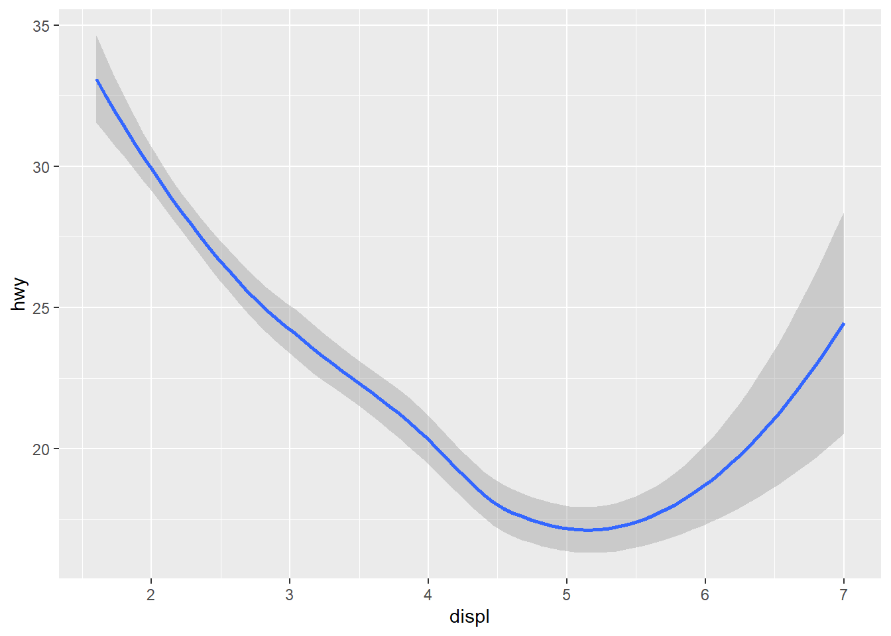
and
ggplot(mpg, aes(displ, hwy)) +
geom_point()
They both contain the same x and y variables and represent the same data. However, they use different geoms.
9.3.1 Some stuff to note
9.3.1.1 Every geom function takes a mapping argument
aes() tells ggplot how variables in the data should be visually represented. A simple example:
ggplot(mpg, aes(displ, hwy)) +
geom_point()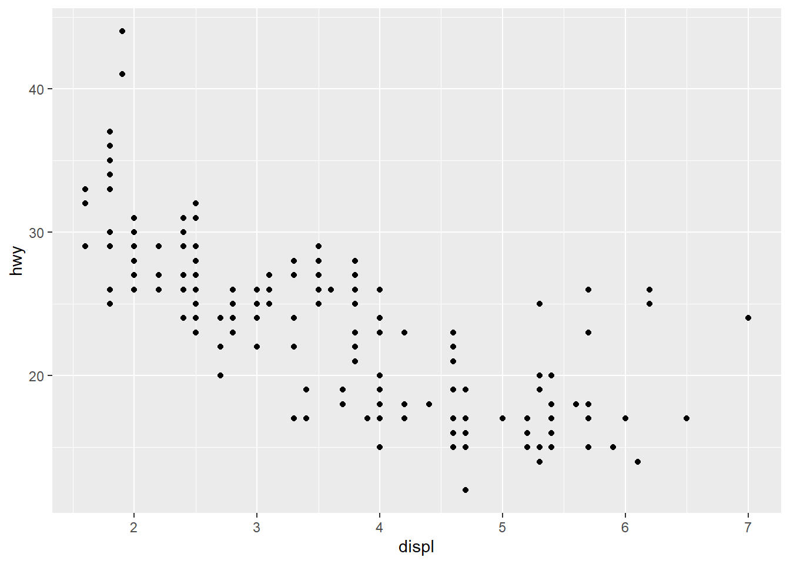
In the plot above, x and y are mapped globally, in ggplot(). But they can also be mapped locally, in the geom:
ggplot(mpg) +
geom_point(aes(displ, hwy))
Both approaches work. The important distinction is:
- Global mapping: defined inside
ggplot(). It can be inherited by the layers that follow. - Local mapping: defined inside a particular geom. It applies to that layer only.
9.3.1.2 Not every aesthetic works with every geom
Consider the difference between a point and a line. A point has a shape: for example, it can be a circle, a triangle or a square. A line, however, doesn’t have a point shape. Instead, it can have a particular line pattern, such as solid, dashed or dotted.
Therefore:
| Aesthetic | Points (geom_point()) |
Lines (geom_smooth()) |
|---|---|---|
shape |
Works | Doesn’t apply |
linetype |
Doesn’t apply | Works |
colour |
Works | Works |
The general principle is that an aesthetic must make sense for the type of object you are drawing.
9.3.1.3 Two examples
One:
ggplot(mpg, aes(displ, hwy, shape = drv)) +
geom_smooth()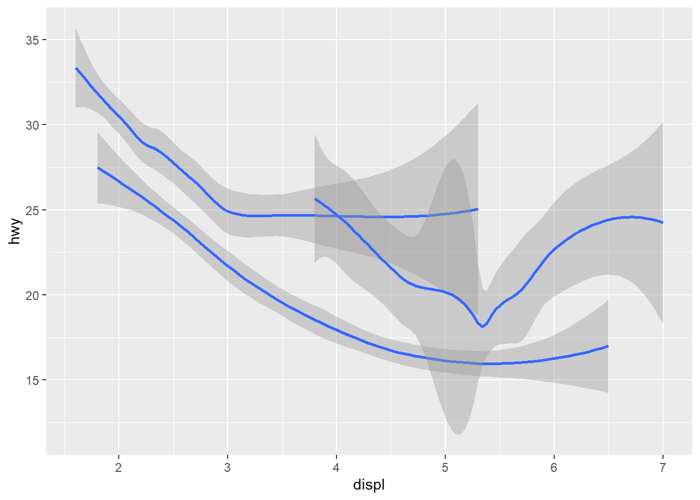
shape = drv attempts to map the drv variable to the shape aesthetic. But geom_smooth() draws lines, not points. Since lines don’t have a shape aesthetic, ggplot2 ignores that mapping. You won’t get different line shapes for the different drive types.
Two:
ggplot(mpg, aes(displ, hwy, linetype = drv)) +
geom_smooth()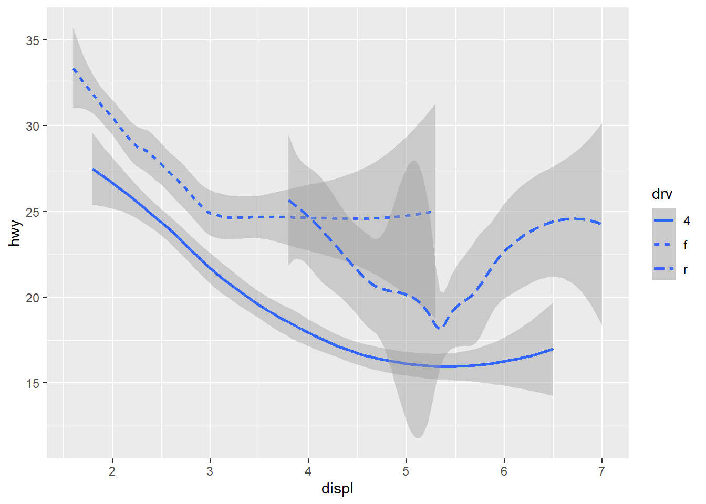
That makes sense, because lines can have different patterns. ggplot2 draws a separate smooth line for each unique value of drv, using a different line pattern to distinguish them.
What does “each unique value” mean?
It simply means each distinct category in the variable. In this case, drv has three unique values: 4, f and r. So ggplot2 fits and draws a separate smooth line for each of those three groups.